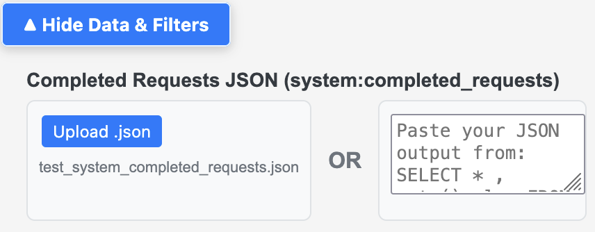
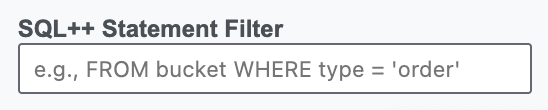
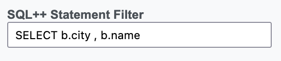
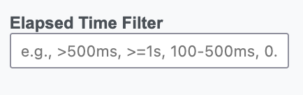
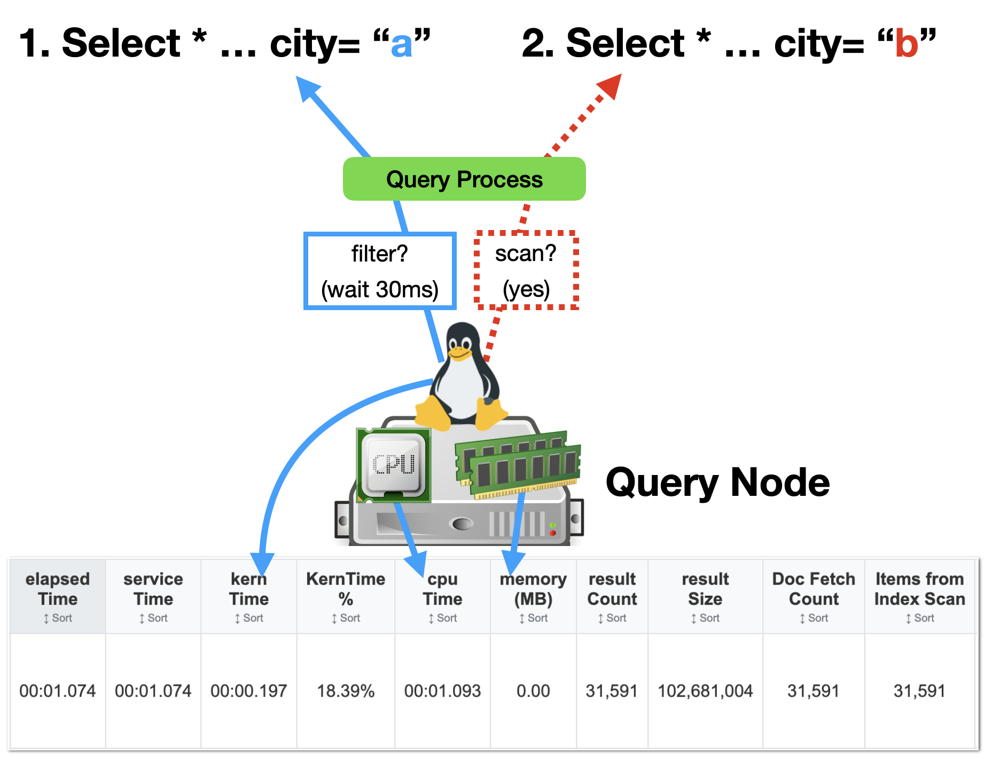

How to Process and Generate Charts/Stats
Run this in Query Workbench, Capella Query tab, or cbq, then export as JSON.
SELECT *, meta().plan FROM system:completed_requests ORDER BY requestId LIMIT 2000;
Tip: For larger datasets, prefer targeted filters (see below) before exporting.
Open Analyzer — in the upper-left input, paste or upload your JSON and it will auto-parse, or click Parse JSON.
Private & secure: Runs and processes your data entirely in your browser and its memory. No server uploads.
After parsing, use filters to focus analysis:
-
Date/Time Range — From/To with quick presets (Original | 1 Week | 1 Day | 1 Hour)


-
SQL++ Statement Contains — text filter for keywords/patterns
PRO – a great way to focus only on one query pattern and reduce the noise from other queries
  -
Elapsed Time Filter — comparisons and ranges (e.g.,
>=500ms,0.5s-2s) - Exclude System Queries — hides system:*, INFER/ADVISE, CREATE/ALTER INDEX, etc.


Run this separate query for system:indexes and paste/upload to the upper-right input to enrich Indexes and Flow views.
SELECT
s.name,
s.id,
s.metadata,
s.state,
s.num_replica,
s.`using` AS indexType,
CONCAT("CREATE INDEX ", s.name, " ON ", k, ks, p, w, ";") AS indexString
FROM system:indexes AS s
LET bid = CONCAT("", s.bucket_id, ""),
sid = CONCAT("", s.scope_id, ""),
kid = CONCAT("", s.keyspace_id, ""),
k = NVL2(bid, CONCAT2(".", bid, sid, kid), kid),
ks = CASE WHEN s.is_primary THEN "" ELSE "(" || CONCAT2(",", s.index_key) || ")" END,
w = CASE WHEN s.condition IS NOT NULL THEN " WHERE " || REPLACE(s.condition, '"', "'") ELSE "" END,
p = CASE WHEN s.`partition` IS NOT NULL THEN " PARTITION BY " || s.`partition` ELSE "" END;
What the Stats and Tables Mean
elapsedTime— Total wall-clock from request acknowledgment to last byte sent.serviceTime— Active execution time while waiting on services (Index, Data, FTS).executionTime— Internal query processing time (engine logic).cpuTime— Cumulative CPU consumed across threads (can exceed wall time).kernTime— Time spent waiting for CPU scheduling by the OS.
Quick patterns: elapsedTime ≫ serviceTime → queuing or network; cpuTime ~ serviceTime → CPU-bound; kernTime high → CPU contention.
See the glossary: elapsedTime, serviceTime, executionTime, cpuTime, kernTime
Scroll down for more details and examples.
Use the statistics table to spot bottlenecks and verify improvements. Start with timing metrics to understand the overall timeline, then correlate with phase metrics and system/resource metrics.

resultCount— Number of documents returned to the client.resultSize— Total bytes sent; affects network transfer time.errorCount— Errors encountered during execution.usedMemory— Peak document memory usage (requiresmemory_quota).
Watch-outs: large resultSize stretches elapsedTime; high usedMemory suggests heavy sorts/aggregations or big payloads.
Performance is influenced by node CPU, memory, and service placement. Large results also increase network time.
The image above shows the Query service handling multiple concurrent requests on a single node. The OS kernel schedules query threads onto a limited number of CPU cores, so parts of a query must “wait” when resources are contended. This scheduling delay appears as kernTime at the operator level and stretches execution/elapsed time without doing useful work.
- Limited CPU cores → thread contention and context switching under load
- Memory pressure → GC/paging can increase pauses and reduce throughput
- Service co-location (Query with Index/KV) → competition for CPU and memory on the same node
- Large
resultSize→ longer post-execution network transfer time
Reduce contention by scaling query nodes, tuning concurrency, creating covering indexes to reduce fetches, and minimizing payload size.
ServiceTime represents the actual query execution phases. This view shows how the query flows through authorize → parse → plan → run → stream, and how these phases roll up into the overall timing metrics.
Enable profile="timings" to see operator-level execTime (CPU), servTime (waiting on services), and kernTime (OS scheduling).
See the glossary: serviceTime, kernTime
- High
kernTime→ CPU contention; check system load and concurrency. - High
phaseCounts.fetch→ add covering indexes; reduce fetches. - Large
resultSizevsresultCount→ optimize projection; narrow scans. elapsedTime≫serviceTime→ queuing/network; scale query nodes/services.cpuTimehigh ~serviceTime→ CPU-bound; simplify expressions or add cores.
See also: Timing metrics and Phase metrics.
Crawl → Walk → Run

- High
phaseCounts.fetch;phaseTimes.fetchdominates. - Larger
resultSize; moderate serviceTime. - Often primary or non-covering indexes; broad scans.
Success: reduce phaseCounts.fetch and phaseTimes.fetch by 30–50%.
See the glossary: serviceTime, elapsedTime

- Reduced
phaseCounts.fetchvia better pre-filtering in indexes. - More selective
phaseCounts.indexScan; improved serviceTime. - Projection refined; data scanned narrows.
Success: sustained drops in fetch counts/time; stable or lower resultSize; fewer I/O waits.
See the glossary: executionTime, serviceTime

phaseCounts.fetch = 0— no document fetches.- Minimal
resultSize(project only needed fields). - Minimal serviceTime; low
kernTime.
Success: 70–90% reduction in serviceTime; faster and more predictable queries.
See the glossary: kernTime, serviceTime
- CRAWL: High
phaseCounts.fetch, largeresultSize, higherserviceTime - WALK: Reduced
fetch, more selectiveindexScan, improvedserviceTime - RUN:
fetch=0(covering index), minimalresultSize, optimalserviceTime
Glossary of Terms
Controls freshness vs performance of index scans.
- not_bounded (unbounded) — fastest; may return slightly stale results.
- at_plus — waits for indexes to catch up to last known mutation time.
- request_plus — strongest; indexes sync to this request’s timestamp (slowest).
Guidance: use unbounded for analytics, at_plus for recent writes, request_plus for strict freshness.
Calendar time actively executing the query, including waits on Index/Data/FTS services.
- High vs
elapsedTime→ execution is the bottleneck. - Dominated by
servTimein profiling → external services are slow.
Total end-to-end time: queuing + execution + result transmission.
- elapsedTime ≫ execution/service → queuing or large result transfer.
- Large
resultSizeor slow network stretches elapsedTime.
Pure query processing time in the Query service (parse → plan → execute), excluding waits on services and result transmission.
- High values indicate computational complexity or inefficient plans.
- Optimize via EXPLAIN, better indexes (covering), and simplified logic.
- Context: see Timing metrics for relationships.
Cumulative CPU across threads; may exceed wall time due to parallelism.
- cpuTime ~ serviceTime → CPU‑bound workload.
- Check sorts, aggregations, and complex expressions.
Time the OS kernel spends scheduling the query’s threads (waiting for a CPU), not doing useful work.
- High kernTime → CPU contention/overload; threads compete for cores.
- Check node CPU metrics, thread counts, and co-located services; reduce concurrency or add cores.
- Per operator: time ≈ execTime + servTime + kernTime; high kernTime stretches execution/elapsed time.
See also: Timing metrics and node diagram in Part 2.
Execution status of a request.
- completed — finished successfully
- running — currently executing
- cancelled — terminated before completion
- timeout — exceeded configured timeout
- error — failed; inspect
errors
Peak document memory used (requires memory_quota).
- High values indicate big payloads, large sorts/aggregations, or inefficient scans.
- Correlate with
resultSizeand phase patterns; consider LIMIT/covering indexes.